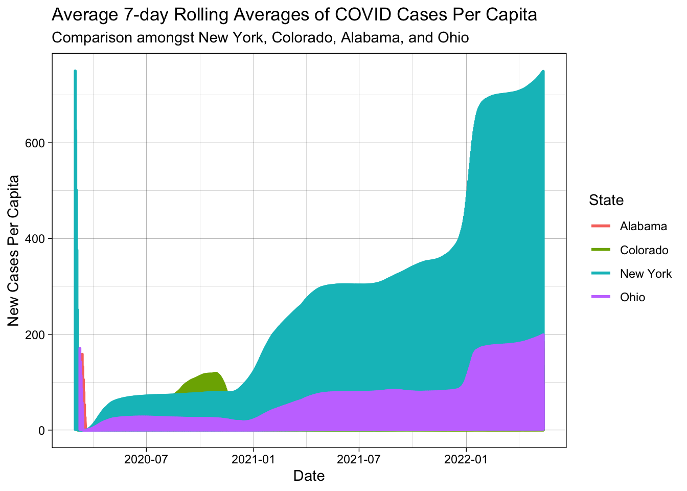

── Attaching core tidyverse packages ──────────────────────── tidyverse 2.0.0 ──
✔ dplyr 1.1.4 ✔ readr 2.1.5
✔ forcats 1.0.0 ✔ stringr 1.5.1
✔ ggplot2 3.5.1 ✔ tibble 3.2.1
✔ lubridate 1.9.4 ✔ tidyr 1.3.1
✔ purrr 1.0.2
── Conflicts ────────────────────────────────────────── tidyverse_conflicts() ──
✖ dplyr::filter() masks stats::filter()
✖ dplyr::lag() masks stats::lag()
ℹ Use the conflicted package (<http://conflicted.r-lib.org/>) to force all conflicts to become errors
library(flextable)
Attaching package: 'flextable'
The following object is masked from 'package:purrr':
compose
library(zoo)
Attaching package: 'zoo'
The following objects are masked from 'package:base':
as.Date, as.Date.numeric
Question 1:
## Having access to historial and real-time environmental data shapes our understanding of trends and management because it allows us to have references. Therefore, we can see if there has been any changes.## If this data becomes inaccesible then we won't be able to see trends and therefore we don't know if anything has changed or what is currently going on.
Rows: 2502832 Columns: 6
── Column specification ────────────────────────────────────────────────────────
Delimiter: ","
chr (3): county, state, fips
dbl (2): cases, deaths
date (1): date
ℹ Use `spec()` to retrieve the full column specification for this data.
ℹ Specify the column types or set `show_col_types = FALSE` to quiet this message.
filter(colorado, date == my.date) %>%slice_max(cases, n=5) %>%select(Date = date, County = county, Cases = cases) %>%flextable() %>%add_header_lines("Most Cumulative Cases")
Most Cumulative Cases
Date
County
Cases
2022-02-01
El Paso
170,673
2022-02-01
Denver
159,022
2022-02-01
Arapahoe
144,255
2022-02-01
Adams
126,768
2022-02-01
Jefferson
113,240
filter(colorado, date == my.date) %>%slice_max(cases, n =5) %>%select(Date = date, County = county, Cases = new_cases) %>%flextable() %>%add_header_lines("Most New Cases")
Rows: 3195 Columns: 67
── Column specification ────────────────────────────────────────────────────────
Delimiter: ","
chr (5): SUMLEV, STATE, COUNTY, STNAME, CTYNAME
dbl (62): REGION, DIVISION, ESTIMATESBASE2020, POPESTIMATE2020, POPESTIMATE2...
ℹ Use `spec()` to retrieve the full column specification for this data.
ℹ Specify the column types or set `show_col_types = FALSE` to quiet this message.
Rows: 3195 Columns: 67
── Column specification ────────────────────────────────────────────────────────
Delimiter: ","
chr (5): SUMLEV, STATE, COUNTY, STNAME, CTYNAME
dbl (62): REGION, DIVISION, ESTIMATESBASE2020, POPESTIMATE2020, POPESTIMATE2...
ℹ Use `spec()` to retrieve the full column specification for this data.
ℹ Specify the column types or set `show_col_types = FALSE` to quiet this message.
pop <- pop %>%select(contains("2021"), contains("NAME"), contains("fips"))pop
## The column names are POPESTIMATE2021, NPOPCHG2021, BIRTHS2021, DEATHS2021, NATURAL CHG2021, INTERNATIONALMIG2021, DOMESTICMIG2021, NETMIG2021, RESIDUAl2021, GQESTIMATE2021, RBIRTH2021, RDEATH2021, RNATURALCHG2021, "RINTERNATIONALMIG2021, RDOMESTICMIG2021 , RNETMIG2021, STNAME, CTYNAME, fips. fips is the same in both the pop and covid_data. The dimensions are 3144 x 18. The data after modification shows only the data from the covid_data that had 2021, name, and fips in the title
##the range of covid case populations seen in Colorado counties in 2021 is between 54 and 9809462
colorado <- colorado %>%inner_join(pop, by ="fips") %>%mutate(cases_per_capita = cases / POPESTIMATE2021, deaths_per_capita = cases / POPESTIMATE2021,new_cases_per_capita = new_cases / POPESTIMATE2021, new_deaths_per_capita = new_deaths / POPESTIMATE2021)##check for x for POPESTIMATE2021colorado_formatted <- colorado %>%select(1:8, 11, 29:32)colorado
# A tibble: 49,463 × 32
date county state fips cases deaths new_cases new_deaths stateFIP
<date> <chr> <chr> <chr> <dbl> <dbl> <dbl> <dbl> <chr>
1 2020-03-05 Douglas Colora… 08035 1 0 NA NA Colorado
2 2020-03-05 Jefferson Colora… 08059 1 0 NA NA Colorado
3 2020-03-06 Denver Colora… 08031 2 0 NA NA Colorado
4 2020-03-06 Douglas Colora… 08035 3 0 2 0 Colorado
5 2020-03-06 Eagle Colora… 08037 1 0 NA NA Colorado
6 2020-03-06 El Paso Colora… 08041 1 0 NA NA Colorado
7 2020-03-06 Jefferson Colora… 08059 1 0 0 0 Colorado
8 2020-03-07 Denver Colora… 08031 2 0 0 0 Colorado
9 2020-03-07 Douglas Colora… 08035 3 0 0 0 Colorado
10 2020-03-07 Eagle Colora… 08037 1 0 0 0 Colorado
# ℹ 49,453 more rows
# ℹ 23 more variables: `sprintf("%03s", county)` <chr>, POPESTIMATE2021 <dbl>,
# NPOPCHG2021 <dbl>, BIRTHS2021 <dbl>, DEATHS2021 <dbl>,
# NATURALCHG2021 <dbl>, INTERNATIONALMIG2021 <dbl>, DOMESTICMIG2021 <dbl>,
# NETMIG2021 <dbl>, RESIDUAL2021 <dbl>, GQESTIMATES2021 <dbl>,
# RBIRTH2021 <dbl>, RDEATH2021 <dbl>, RNATURALCHG2021 <dbl>,
# RINTERNATIONALMIG2021 <dbl>, RDOMESTICMIG2021 <dbl>, RNETMIG2021 <dbl>, …
library(flextable)worst_cum_cases <- colorado_formatted %>%filter(date == my.date) %>%slice_max(cases_per_capita, n =5) %>%select(-state, -fips)most_new_cases <- colorado_formatted %>%filter(date == my.date) %>%slice_max(new_cases_per_capita, n =5) %>%select(-state, -fips)flextable(worst_cum_cases) %>%add_header_lines("Top 5 Colorado Counties with the Most Cumulative Covid Cases") %>%set_header_labels(date ="Date", county ="County", cases ="Cases", deaths ="Deaths", new_cases ="New Cases", new_deaths ="New Deaths", POPESTIMATE2021 ="Pop. Estimate 2021", cases_per_capita ="Cases Per Capita", deaths_per_capita ="Deaths Per Capita", new_cases_per_capita ="New Cases Per Capita", new_deaths_per_capita ="New Deaths Per Capita")
Top 5 Colorado Counties with the Most Cumulative Covid Cases
Date
County
Cases
Deaths
New Cases
New Deaths
Pop. Estimate 2021
Cases Per Capita
Deaths Per Capita
New Cases Per Capita
New Deaths Per Capita
2022-02-01
Crowley
2,935
28
56
0
5,735
0.5117698
0.5117698
0.0097646033
0
2022-02-01
Bent
2,199
46
22
0
5,339
0.4118749
0.4118749
0.0041206218
0
2022-02-01
Pitkin
5,946
6
7
0
17,337
0.3429659
0.3429659
0.0004037607
0
2022-02-01
Lincoln
1,874
9
5
0
5,473
0.3424082
0.3424082
0.0009135757
0
2022-02-01
Logan
6,402
104
25
0
21,006
0.3047701
0.3047701
0.0011901362
0
flextable(most_new_cases) %>%add_header_lines("Top 5 Colorado Counties with the Most New Covid Cases") %>%set_header_labels(date ="Date", county ="County", cases ="Cases", deaths ="Deaths", new_cases ="New Cases", new_deaths ="New Deaths", POPESTIMATE2021 ="Pop. Estimate 2021", cases_per_capita ="Cases Per Capita", deaths_per_capita ="Deaths Per Capita", new_cases_per_capita ="New Cases Per Capita", new_deaths_per_capita ="New Deaths Per Capita")
Top 5 Colorado Counties with the Most New Covid Cases
Date
County
Cases
Deaths
New Cases
New Deaths
Pop. Estimate 2021
Cases Per Capita
Deaths Per Capita
New Cases Per Capita
New Deaths Per Capita
2022-02-01
Crowley
2,935
28
56
0
5,735
0.5117698
0.5117698
0.009764603
0
2022-02-01
Bent
2,199
46
22
0
5,339
0.4118749
0.4118749
0.004120622
0
2022-02-01
Sedgwick
441
8
9
0
2,326
0.1895959
0.1895959
0.003869304
0
2022-02-01
Washington
937
26
14
0
4,868
0.1924815
0.1924815
0.002875924
0
2022-02-01
Las Animas
3,183
38
38
0
14,334
0.2220594
0.2220594
0.002651039
0
Question 4:
colorado_formatted_14_days <- colorado_formatted %>%filter(between(date, my.date -13, my.date)) %>%group_by(county) %>%summarise(perCapitaDeathsper100K =100000*sum(new_cases)/ POPESTIMATE2021[1]) %>%select(County = county, Cases = perCapitaDeathsper100K) %>%slice_max(Cases, n =5) %>%flextable() %>%add_header_lines("Cases per 100000 in the last 14 days")colorado_formatted_14_days
Cases per 100000 in the last 14 days
County
Cases
Crowley
3,923.278
Lincoln
3,599.488
Alamosa
3,594.909
Mineral
3,336.921
Conejos
3,152.203
Question 5:
library(tidyverse)covid_deaths_2021 <- colorado %>%group_by(county) %>%summarize(total_covid_deaths =sum(new_deaths, na.rm =TRUE), .groups ="drop")death_ratio_data <- covid_deaths_2021 %>%left_join(colorado %>%select(county, DEATHS2021) %>%distinct(), by =c("county")) %>%mutate(death_ratio_data = (total_covid_deaths / DEATHS2021) *100)counties_over_20_percent <- death_ratio_data %>%filter(death_ratio_data >=20)ggplot(counties_over_20_percent) +geom_col(aes(x = death_ratio_data, y = county)) +labs(title ="Counties with COVID Deaths Accounting for 20% of More of Total Deaths in 2021",x ="Covid Deaths as % of Total Deaths",y ="County",fill ="Percentage") +theme_minimal() +scale_fill_gradient(low ="green", high ="red") +theme(axis.text.y =element_text(size =3))
# A tibble: 3,192 × 5
state date daily_new_cases new_cases_lagged rolling_mean_7_day
<chr> <date> <dbl> <dbl> <dbl>
1 Alabama 2020-03-13 6 NA NA
2 Alabama 2020-03-14 12 6 NA
3 Alabama 2020-03-15 23 11 NA
4 Alabama 2020-03-16 29 6 NA
5 Alabama 2020-03-17 39 10 NA
6 Alabama 2020-03-18 51 12 NA
7 Alabama 2020-03-19 78 27 NA
8 Alabama 2020-03-20 106 28 14.3
9 Alabama 2020-03-21 131 25 17
10 Alabama 2020-03-22 157 26 19.1
# ℹ 3,182 more rows
ggplot(states_daily_new_cases) +geom_col(aes(x = date, y = new_cases_lagged)) +labs(title ="Daily New COVID Cases 7 Day Rolling Averages", subtitle ="Comparing New York, Colorado, Alabama, and Ohio COVID 7 Day Rolling Averages") +theme_linedraw() +facet_wrap(~state, nrow =2, scale ="free_y") +theme(axis.text.x =element_text(size =5), axis.text.y =element_text(size =5))
Warning: Removed 1 row containing missing values or values outside the scale range
(`geom_col()`).
Warning in inner_join(., state_covid_pop_estimates, pop, by = "state"): Detected an unexpected many-to-many relationship between `x` and `y`.
ℹ Row 1 of `x` matches multiple rows in `y`.
ℹ Row 1 of `y` matches multiple rows in `x`.
ℹ If a many-to-many relationship is expected, set `relationship =
"many-to-many"` to silence this warning.
ggplot(state_cases_per_capita) +geom_line(aes(x = date, y = rolling_mean_per_capita, color = state), size =1) +theme_linedraw() +labs(title ="Average 7-day Rolling Averages of COVID Cases Per Capita", subtitle ="Comparison amongst New York, Colorado, Alabama, and Ohio",x ="Date",y ="New Cases Per Capita",color ="State" )
Warning: Using `size` aesthetic for lines was deprecated in ggplot2 3.4.0.
ℹ Please use `linewidth` instead.
Warning: Removed 1 row containing missing values or values outside the scale range
(`geom_line()`).

##Scaling by population impacts how the information looks because it lowers the amount of cases since you would divide by the population. Therefore, all states look better because the case amounts are lower than they truly are.
Rows: 3221 Columns: 3
── Column specification ────────────────────────────────────────────────────────
Delimiter: ","
chr (1): fips
dbl (2): LON, LAT
ℹ Use `spec()` to retrieve the full column specification for this data.
ℹ Specify the column types or set `show_col_types = FALSE` to quiet this message.
Warning: Returning more (or less) than 1 row per `summarise()` group was deprecated in
dplyr 1.1.0.
ℹ Please use `reframe()` instead.
ℹ When switching from `summarise()` to `reframe()`, remember that `reframe()`
always returns an ungrouped data frame and adjust accordingly.
ggplot(weighted_center_mean) +borders("state", fill ="grey", colour ="skyblue") +geom_point(aes(x = weight_mean_LON, y = weight_mean_LAT, size = total_cases_per_day), color ="red", alpha = .25) +theme_linedraw() +labs(x ="",y ="",title ="Weighted Mean Center of COVID outbreak in the USA",subtitle ="Weighted means across each state",color ="Time",theme(legend.position ="none"))
Warning: Removed 11 rows containing missing values or values outside the scale range
(`geom_point()`).